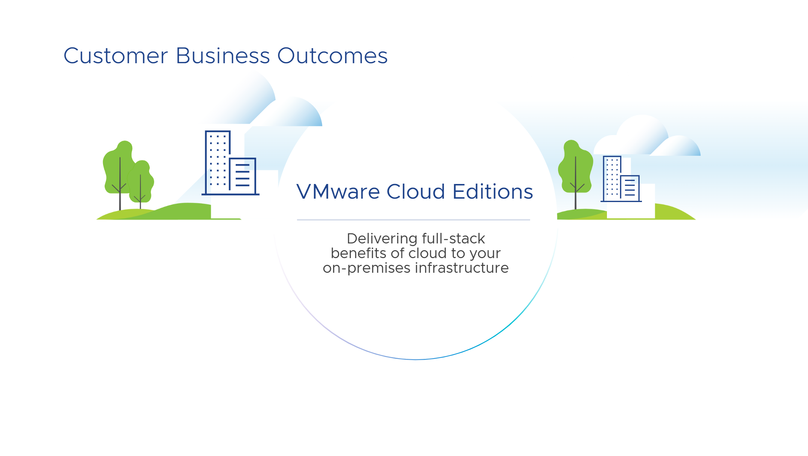
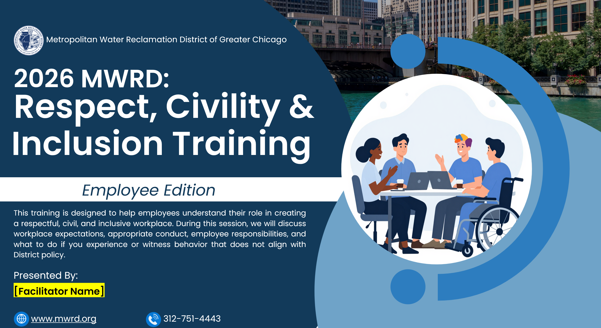
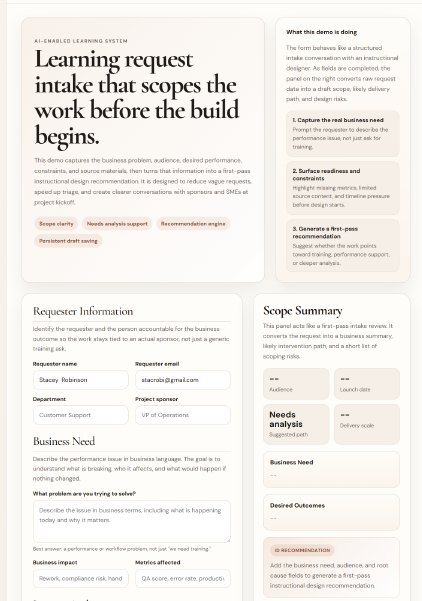
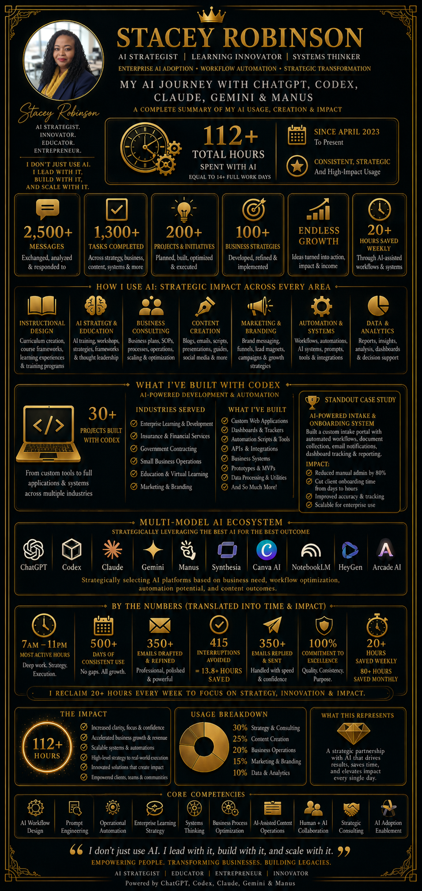
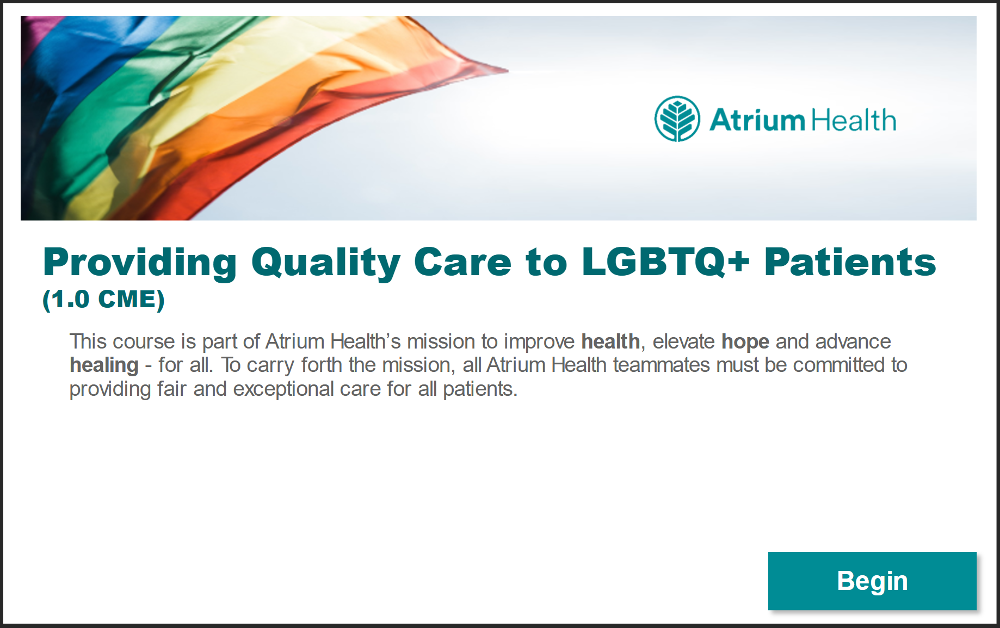

Projects
Examples of how I translate complexity into learning experiences people can actually use.
This page introduces seven featured project directions that reflect the type of Instructional Design work I create.


Project Two
Respect, Civility & Inclusion Training Program
Instructor-Led Enterprise Learning Experience (ILT + Facilitator Enablement)
Project Three
AI-Assisted Compliance Training Video Development
A scenario-based compliance training video created to support workplace learning on harassment, discrimination, and retaliation while demonstrating how AI can be used strategically across script development, visual production, and animation workflow.
Tools Used: Claude, Manus, Google Flow
Review Project

Project Five
AI Strategy & Impact Infographic
A strategic executive style infographic designed to showcase how I leverage AI across enterprise learning, workflow automation, business consulting, content strategy, and operational transformation. This artifact translates complex AI work into a clear and visually compelling narrative that highlights both technical fluency and business impact.
Review Project
Project Six
Global Real Estate & Cultural Intelligence Training
(Articulate Rise 360)
An interactive eLearning experience created in Articulate Rise 360 for the National Association of REALTORS® (NAR), designed to strengthen global real estate awareness, cultural intelligence, and international business readiness across the Asia/Pacific region.
Review Project
Project Seven
Reducing LGBTQ+ Barriers to Care Through Online Teammate Education
A research-based healthcare learning initiative created to strengthen inclusive care practices, increase teammate confidence, and improve cultural awareness across Atrium Health.
Click here to review the full training.
Review Project